Ejercicios Resueltos
3x2-ex=0
usemos el método de Bisección para encontrar la segunda raíz en el intervalo [0.9; 1.0]
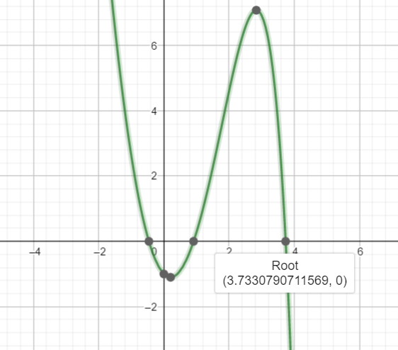 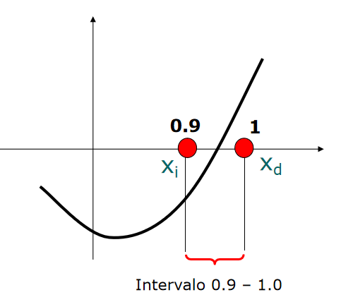 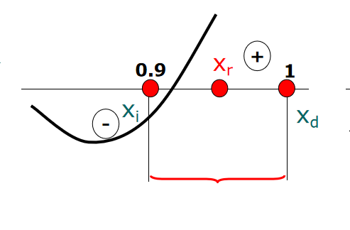 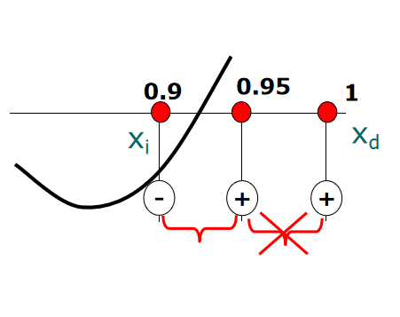 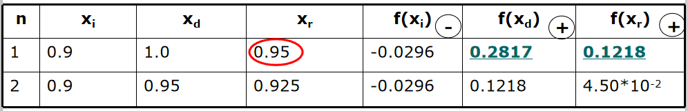 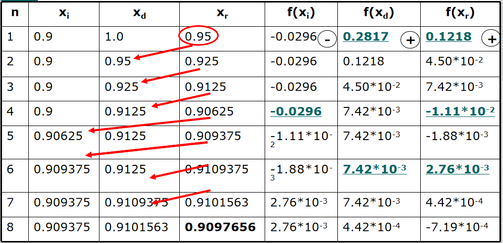La ecuación mostrada tiene una raiz en [1,2], ya que f(1)=-5 y f(2)=14. Muestre los resultados parciales del algoritmo de la posición falsa con una tolerancia de 0.0001
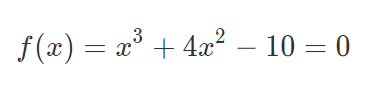 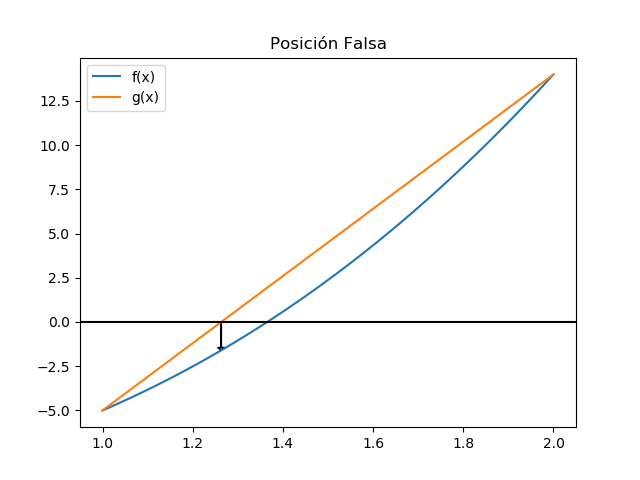Semejante a los métodos anteriores se usa un intervalo [a,b] para buscar la raiz. Se divide el intervalo en dos partes al calcular el punto c que divide al intervalo siguiendo la ecuación:
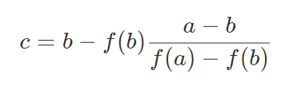 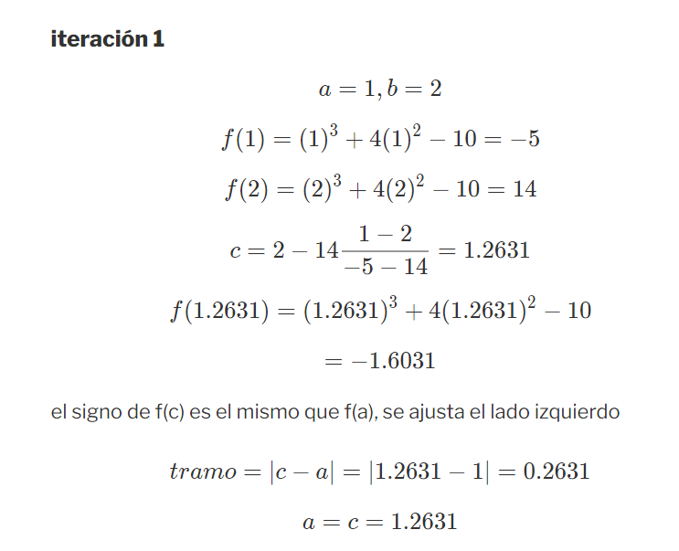 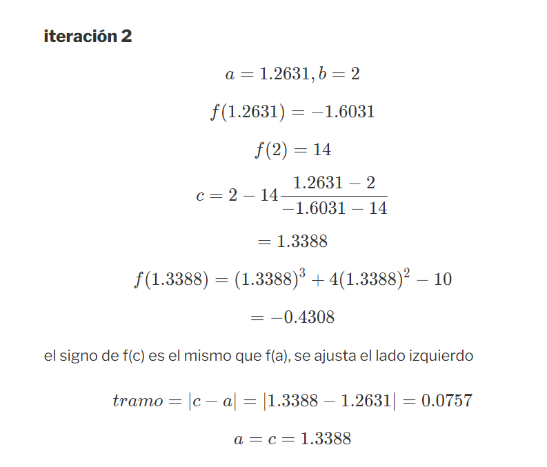 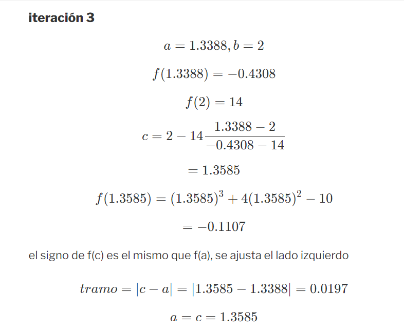 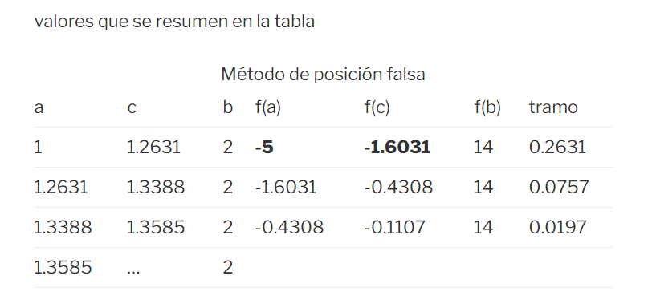f(x)=ex-5x2
usaremos el método de Falsa posicion Modificadopara encontrar las iteraciones correspondientes

Encontrar la solución a la ecuacion, usando el método del punto fijo
e-x-x=0
Al igual que los métodos anteriores, es conveniente determinar el intervalo [a,b] donde es posible evaluar f(x). Se revisa si hay cambio de signo en el intervalo para buscar una raiz
Para el ejemplo, el rango de observación será [0,1], pues f(0)=1 es positivo y f(1)=-0.63 es negativo.
Para el punto fijo, se reordena la ecuación para para tener una ecuación con la variable independiente separada
Se obtiene por un lado la recta identidad y=x, por otro se tiene la función g(x).
Se buscará la intersección entre las dos expresiones
x=e-x
g(x)=e-x
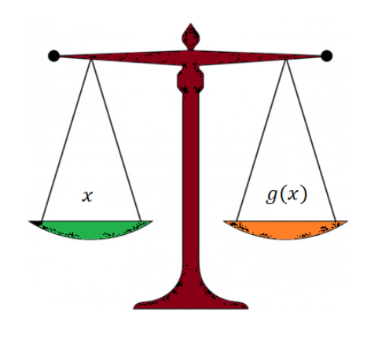Se puede iniciar la búsqueda por uno de los extremos del rango [a,b]. Por ejemplo:
- iniciando desde el extremo izquierdo x=a,
- se determina el valor de b = g(x)
- se determina la diferencia de la aproximación o error = |b-a|, tolera=0.001
- se proyecta en la recta identidad, como el nuevo punto de evaluación x=b
- se repite el proceso para el nuevo valor de x, hasta que el error sea menor al tolerado.
- En caso que el proceso no converge, se utiliza un contador de iteraciones máximo, para evitar tener un lazo infinito
El proceso realizado en la tabla se muestra en la gráfica, para una función que converge
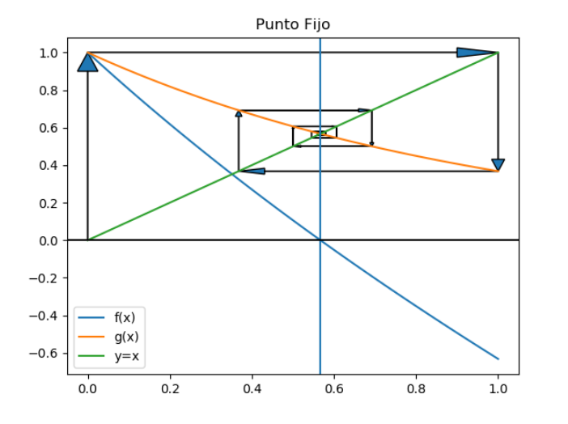La ecuación mostrada tiene una raiz en [1,2], ya que f(1)=-5 y f(2)=14. Muestre los resultados parciales del algoritmo de Newton-Raphson con una tolerancia de 0.0001
f(x)=x3+4x2-10=0
Método Analitico
El método requiere obtener la derivada f'(x) de la ecuación para el factor del denominador.
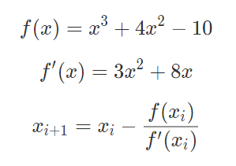Para el desarrollo se inicia la búsqueda desde un punto en el intervalo [1,2], por ejemplo el extremo derecho, x1=2.
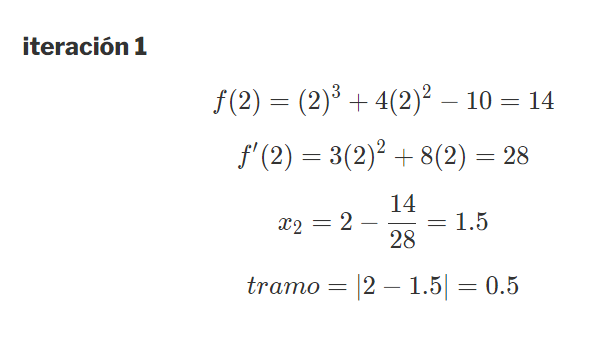 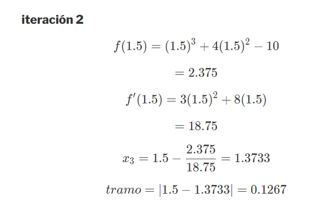 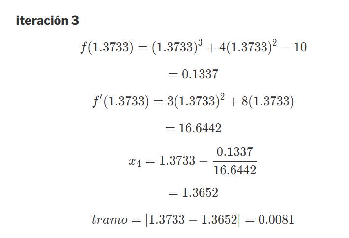La ecuación mostrada tiene una raiz en el intervalo [1,2], ya que f(1) = -5 y f(2) = 14 Muestre los resultados parciales del algoritmo de la secante con una tolerancia de 0.0001
x3-4x2-10=0
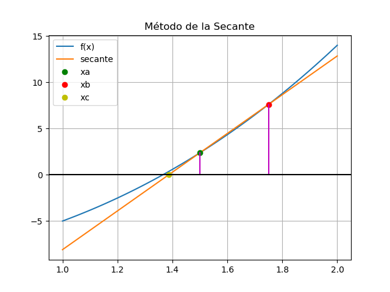 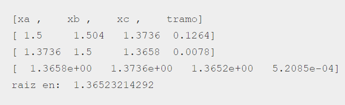